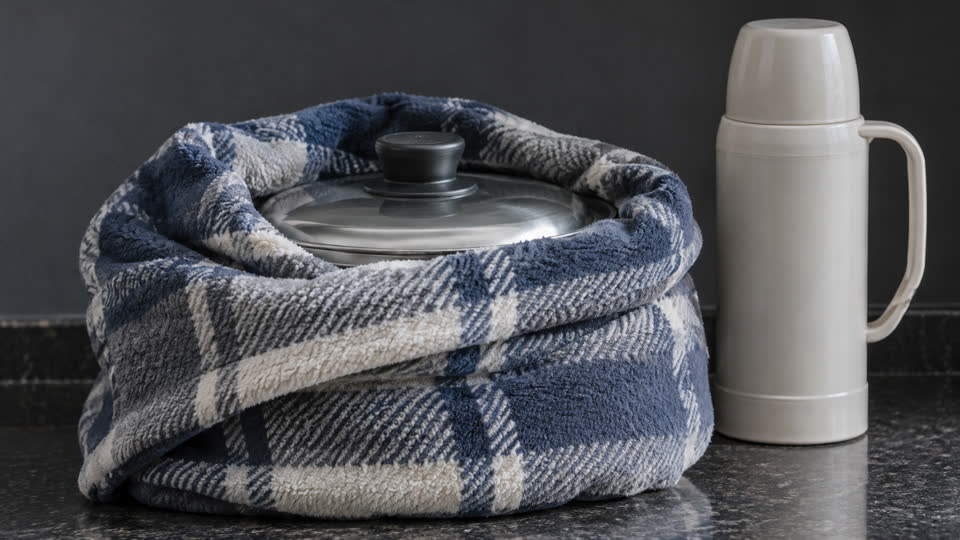

Nas primeiras 72 horas vocêª nê£o cozinha: a famêÂlia come o que jê¡ estê¡ pronto. Poupa gê¡s e ê¡gua e evita o maior risco de quem improvisa fogo em casa, o incêªndio e o monê³xido de carbono (um gê¡s sem cheiro nem cor, que mata). Se passar de 3 dias, o plano depende de onde vocêª mora e do seu fogê£o.

ê°Å¸Â¥Â« 72 horas: sem cozinhar
Primeiro o que estraga: a geladeira fechada segura o frio por cerca de 4 horas; o freezer cheio, cerca de 48 horas (metade cheio, 24). Depois, a despensa: lata pronta (atum, sardinha, salsicha, feijê£o e grê£o-de-bico prontos, milho), pê£o de forma, biscoito, pasta de amendoim, castanhas, frutas e frutas secas, leite de caixinha ou em pê³, aveia com leite frio, barra de cereal. Abridor de lata manual e prato descartê¡vel, que poupa ê¡gua de lavar.

ê°Å¸âÂ¥ Mais de 3 dias: os truques
O estoque de arroz, macarrê£o e feijê£o precisa de fogo e de ê¡gua extra para cozinhar (os 2 litros por dia sê£o sê³ para beber). Prefira o que cozinha rê¡pido (macarrê£o fino, arroz parboilizado, cuscuz, aveia) e feijê£o de lata. Panela sempre tampada. Calor guardado: ferva de verdade (arroz e macarrê£o uns 5 minutos; feijê£o de molho, pelo menos 10 minutos de fervura forte, porque feijê£o cru faz mal), desligue, tampe e enrole a panela num cobertor; ela termina de cozinhar gastando bem menos gê¡s. Garrafa tê©rmica com ê¡gua fervida de manhê£ serve o dia todo.

ê°Å¸Â Casa com fogê£o a gê¡s
O gê¡s nê£o depende de luz, mas o acendedor elê©trico nê£o funciona: tenha fê³sforo ou isqueiro no kit e teste hoje, com o fogê£o fora da tomada. O forno de alguns fogêµes pode nê£o funcionar sem luz; conte com as bocas. Um botijê£o de 13 kg dura de 3 semanas a 2 meses para uma famêÂlia de 4: anote quando trocou e troque antes de acabar. O gê¡s encanado, na maioria das vezes, continua chegando sem luz.

ê°Å¸Å³ SêÂtio ou casa com quintal: lenha
Fogê£o a lenha com chaminê© ê© o melhor plano para semanas. Sem ele, um fogareiro de trêªs ou quatro tijolos ao ar livre, longe da casa, de mato seco e de crianê§a. Guarde lenha seca, cortada e coberta, longe da parede, com gravetos para acender: lenha verde faz fumaê§a e pouco calor. Na seca, respeite a proibiê§ê£o de queimada e deixe um balde de ê¡gua do lado. Em dia de sol forte, um fogê£o solar cozinha sem fumaê§a.

ê°Å¸Â¢ Apartamento
Nada de lenha, carvê£o, churrasqueira ou fogueira no apartamento, na sacada ou na varanda. O botijê£o ê© proibido em muitos prê©dios (em Sê£o Paulo e no Rio, nos que têªm gê¡s canalizado): confira a regra do seu e nê£o guarde botijê£o reserva em casa. Gê¡s encanado: faê§a o teste do fê³sforo (em enchente o prê©dio pode fechar o gê¡s). Fogê£o elê©trico ou de induê§ê£o nê£o cozinha sem luz; o seu plano ê© trocar boa parte do estoque de 14 dias por comida pronta e ter um fogareiro portê¡til a cartucho, usado sê³ na varanda aberta, se o prê©dio permitir: ê© a êºnica exceê§ê£o, porque a chama ê© pequena, acende e apaga na hora e nê£o tem brasa (cada cartucho dê¡ 1 a 2 horas; varanda envidraê§ada fechada nê£o vale). Se o prê©dio nê£o deixa, o plano ê© sê³ comida pronta e ê¡gua quente com um vizinho que tenha gê¡s. Combine com os vizinhos: quem tem gê¡s esquenta ê¡gua para quem nê£o tem.

ê¢Å¡Â ê¯Â¸Â Nunca, em nenhuma casa
Churrasqueira, fogareiro a carvê£o, braseiro ou gerador dentro de casa, na garagem fechada ou perto de janela; fogê£o ou forno aceso para aquecer. Dor de cabeê§a, enjoo e tontura em vê¡rias pessoas ao mesmo tempo: saia para o ar livre e ligue 193. Cheiro de gê¡s: abra janelas, feche o registro, nê£o mexa em interruptor, saia e ligue 193. O fogareiro a cartucho tambê©m solta monê³xido: sê³ ao ar livre ou na varanda aberta, nunca em cê´modo fechado. Um detector de monê³xido de carbono a pilha ê© barato e protege a famêÂlia.